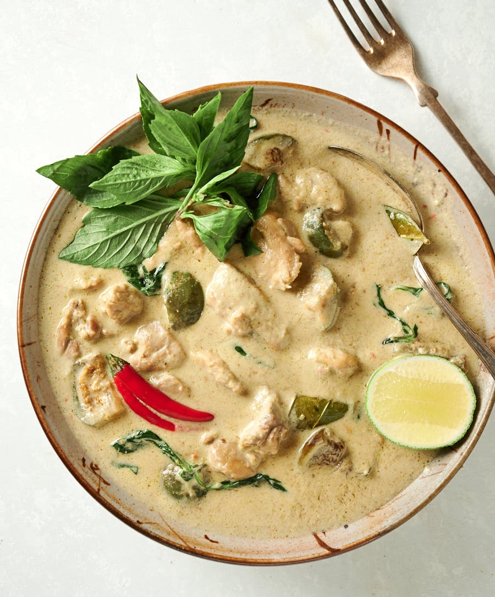

Thai Green Curry

This Thai green curry recipe never fails to please! It is quick and easy to make and the chicken stays moist and tender. Serve over jasmine rice for a satisfying meal.
Ingredients
- 1 tablespoon dark soy sauce
- 1 tablespoon all-purpose flour
- 1 pound skinless, boneless chicken breast halves - cut into 1 inch cubes
- 2 tablespoons cooking oil
- 2 tablespoons green curry paste
- 2 green onions with tops, chopped
- 3 cloves garlic, peeled and chopped
- 1 teaspoon fresh ginger, peeled and finely chopped
- 2 cups coconut milk
- 2 tablespoons white sugar
- 1 tablespoon fish sauce
- 1 tablespoon dark soy sauce
- ½ cup cilantro leaves, for garnish
Directions
- Pour 1 tablespoon soy sauce into a shallow dish. Place 1 tablespoon flour into a separate shallow dish. Toss chicken pieces in soy sauce, then in flour, coating pieces evenly.
- Heat oil in a large skillet over medium-high heat. Add chicken; cook and stir until browned, about 5 minutes. Transfer chicken to a plate; set aside.
- Reduce heat to medium and stir in curry paste. Cook for 1 minute until fragrant. Add green onions, garlic, and ginger; cook an additional 2 minutes.
- Return chicken to the skillet, stirring to coat with curry paste. Stir in coconut milk, sugar, fish sauce, and remaining 1 tablespoon soy sauce; simmer over medium heat until chicken is tender and cooked through, about 20 minutes. Serve curry with cilantro leaves.